Hazel 游戏引擎笔记 013：图层与 LayerStack
本节来源：The Cherno 游戏引擎系列第 13 讲“图层”，时长约 22 分 59 秒。
原课程与 Hazel 代码作者：The Cherno。代码参考提交：5bd8093。
本文由视频字幕重构、翻译并整理，不是官方教材；术语和代码以原视频及同期 Hazel 仓库为准。
本节目标
上一讲把 GLFW 窗口事件接入了 Hazel。本节引入一个新的基础抽象：Layer，以及负责管理多个 Layer 的 LayerStack。
Layer 不只是绘制顺序。它同时影响：
- 每帧更新顺序；
- 渲染顺序；
- 事件接收顺序；
- 应用不同功能模块的边界；
- 事件是否继续向下一层传播。
本节会实现：
Layer的生命周期与更新、事件虚函数；LayerStack的普通层和 Overlay 插入规则；Application对 LayerStack 的拥有与转发；PushLayer()、PushOverlay()和反向事件传播；- 客户端
ExampleLayer； - 修复 DLL 与 Sandbox 使用不同 C++ 运行时堆导致的崩溃问题。
1. Layer 是什么
(参考时间: 00:01:18)
Cherno 用 Photoshop 图层作类比：图层可以理解为一个有序集合，每一层包含一部分内容，顺序决定它们如何叠加。
在游戏引擎中，Layer 通常是一个相对独立的应用模块，例如：
- 3D 游戏世界层：保存场景并执行主要渲染；
- 游戏调试层：绘制碰撞区域、命中框和调试几何体；
- UI 层：使用正交投影绘制按钮、菜单和 HUD；
- 调试 UI 层：承载 ImGui 等工具界面；
- 编辑器和工具层：仅在开发或内部构建中启用。
Layer 是一个抽象概念。它本身不规定“必须绘制什么”或“必须处理什么事件”，而是提供统一的调用入口，由子类决定具体行为。
graph TD
A[Application] --> B[LayerStack]
B --> C[3D Game Layer]
B --> D[World Debug Layer]
B --> E[UI Layer]
B --> F[ImGui Overlay]
2. 更新与事件使用相反的顺序
(参考时间: 00:02:11)
LayerStack 是一个有序列表。Update 和渲染从底部到顶部，也就是从 begin() 到 end()：
底层游戏世界
-> 世界调试层
-> UI 层
-> Overlay
这样后面的层可以覆盖前面层绘制的内容。Overlay 永远排在普通层之后，因此最后渲染并显示在最上方。
事件传播方向相反。鼠标点击最先落到用户看到的顶层，因此事件从 end() 向 begin() 反向传播：
graph TD
subgraph Update[Update / Render 正向]
U1[Game Layer] --> U2[Debug Layer]
U2 --> U3[UI Layer]
U3 --> U4[Overlay]
end
subgraph Events[Event 反向]
E4[Overlay] --> E3[UI Layer]
E3 --> E2[Debug Layer]
E2 --> E1[Game Layer]
end
如果一个 UI 按钮已经处理了点击事件，事件会标记为 Handled，传播立即停止，游戏世界不会再把同一次点击当成开火、选择或其他操作。这正是 LayerStack 对事件顺序最实用的价值。
3. Layer 接口
(参考时间: 00:08:07)
Layer.h 定义一个可供客户端继承的基类：
class HAZEL_API Layer
{
public:
Layer(const std::string& name = "Layer");
virtual ~Layer();
virtual void OnAttach() {}
virtual void OnDetach() {}
virtual void OnUpdate() {}
virtual void OnEvent(Event& event) {}
inline const std::string& GetName() const
{
return m_DebugName;
}
protected:
std::string m_DebugName;
};
3.1 DebugName
名字只是调试标识，默认是 "Layer"。Layer 不应该依靠名字互相查找或通信；模块之间应使用明确的 API 或事件。
3.2 生命周期
OnAttach() 和 OnDetach() 类似初始化与清理：
- Layer 被加入应用并开始参与运行时调用
OnAttach()； - Layer 被移出应用时调用
OnDetach()。
3.3 每帧更新
OnUpdate() 由应用的主循环调用，通常每帧一次。游戏逻辑、动画更新和渲染都可以从这里进入。
3.4 事件入口
OnEvent(Event&) 接收窗口和其他模块产生的事件。若某个 Layer 处理了事件，应通过 EventDispatcher 把事件标记为已处理。
所有回调默认都是空实现，子类只重写需要的部分。
实现文件负责保存调试名：
Layer::Layer(const std::string& debugName)
: m_DebugName(debugName)
{
}
Layer::~Layer()
{
}
虚析构函数是必需的，因为 Layer 通常通过基类指针销毁。
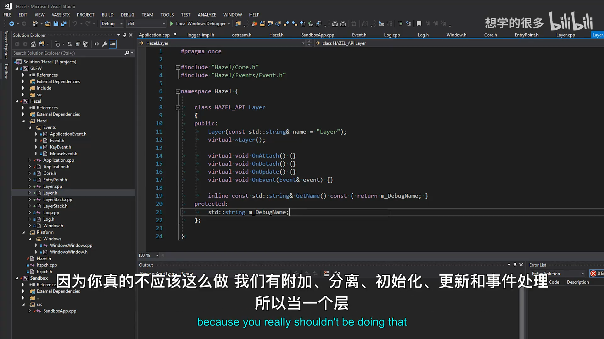
📷 Layer 基类的名称、生命周期、更新和事件回调
回到原视频 (00:09:08)
3.5 暂未加入启停功能
视频讨论了 Layer 的启用和禁用：可以给 Layer 或 LayerStack 增加布尔状态，使禁用层不更新、不渲染，也不接收事件。但本节故意没有加入，以免一次引入过多复杂度。
4. LayerStack 数据结构
(参考时间: 00:10:49)
LayerStack 本质上封装了 std::vector<Layer*>：
class HAZEL_API LayerStack
{
public:
LayerStack();
~LayerStack();
void PushLayer(Layer* layer);
void PushOverlay(Layer* overlay);
void PopLayer(Layer* layer);
void PopOverlay(Layer* overlay);
std::vector<Layer*>::iterator begin()
{
return m_Layers.begin();
}
std::vector<Layer*>::iterator end()
{
return m_Layers.end();
}
private:
std::vector<Layer*> m_Layers;
std::vector<Layer*>::iterator m_LayerInsert;
};
为什么使用 vector，而不是真正的栈？
- 每帧需要从底到顶顺序遍历；
- 事件需要反向遍历；
- Overlay 要插入到普通层之后，而不是简单压入栈顶；
- 连续存储有利于频繁迭代。
m_LayerInsert 指向“普通层区域”的下一个插入位置，也就是普通层和 Overlay 的分界。
graph LR
A[begin] --> B[普通 Layer 1]
B --> C[普通 Layer 2]
C --> D[m_LayerInsert]
D --> E[Overlay 1]
E --> F[Overlay 2]
F --> G[end]
4.1 插入普通层
void LayerStack::PushLayer(Layer* layer)
{
m_LayerInsert =
m_Layers.emplace(m_LayerInsert, layer);
}
emplace() 在分界位置插入新 Layer，并返回指向新元素的迭代器。因此再添加普通层时仍会插在 Overlay 之前。
4.2 插入 Overlay
void LayerStack::PushOverlay(Layer* overlay)
{
m_Layers.emplace_back(overlay);
}
Overlay 总是追加到最末尾。无论普通层何时加入，Overlay 都保持在最后并优先接收事件。
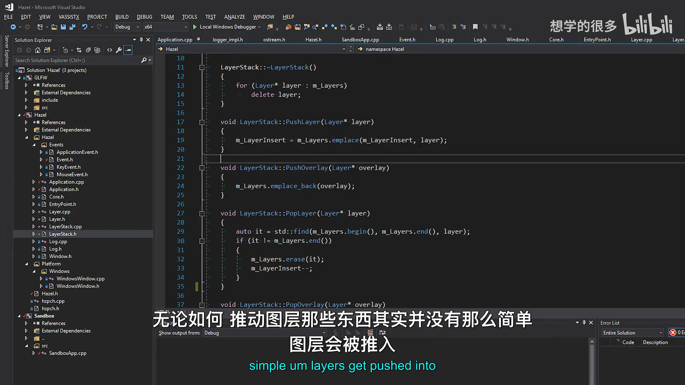
📷 Layer 插入位置与 Overlay 末尾插入规则
回到原视频 (00:13:11)
5. Layer 的所有权
(参考时间: 00:12:04)
LayerStack 接收的是原始指针，并拥有加入其中的 Layer：
LayerStack::~LayerStack()
{
for (Layer* layer : m_Layers)
delete layer;
}
所有权语义如下：
- Layer 一旦加入 LayerStack，由 LayerStack 负责最终释放；
PopLayer()或PopOverlay()只是从列表移除，不立即删除对象；- 被弹出的 Layer 可以在之后再次加入；
- 整个 LayerStack 销毁时，所有仍在列表中的 Layer 都会被删除；
- LayerStack 是
Application的成员，因此其生命周期跟随应用。
这意味着当前设计默认 Layer 通常存活到应用结束。未来切换场景或编辑器模式时，可能选择重建整个 LayerStack，而不是频繁弹出并单独销毁 Layer。
弹出普通层时需要恢复插入位置：
void LayerStack::PopLayer(Layer* layer)
{
auto it = std::find(m_Layers.begin(),
m_Layers.end(),
layer);
if (it != m_Layers.end())
{
m_Layers.erase(it);
m_LayerInsert--;
}
}
Overlay 的弹出不会改变普通层分界：
void LayerStack::PopOverlay(Layer* overlay)
{
auto it = std::find(m_Layers.begin(),
m_Layers.end(),
overlay);
if (it != m_Layers.end())
m_Layers.erase(it);
}
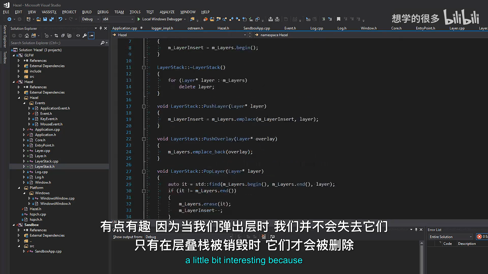
📷 LayerStack 析构负责删除仍由列表拥有的层
回到原视频 (00:12:04)
6. 在 Application 中接入 LayerStack
(参考时间: 00:14:46)
Application 增加 LayerStack 成员和两个转发函数：
void PushLayer(Layer* layer);
void PushOverlay(Layer* layer);
private:
LayerStack m_LayerStack;
void Application::PushLayer(Layer* layer)
{
m_LayerStack.PushLayer(layer);
}
void Application::PushOverlay(Layer* layer)
{
m_LayerStack.PushOverlay(layer);
}
因为 LayerStack 是 Application 的普通成员，它和应用程序拥有相同生命周期。当前应用只提供 Push，不提供 Pop；先提供一个最小可用版本，后续再扩展。
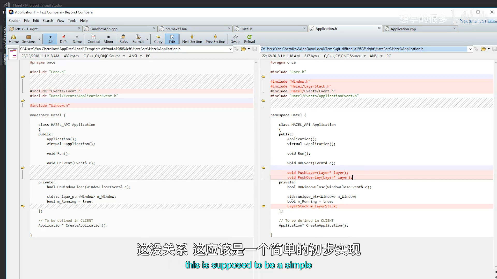
📷 Application 增加 PushLayer、PushOverlay 与 LayerStack 成员
回到原视频 (00:15:00)
7. Update 正向遍历
(参考时间: 00:15:27)
主循环从第一个 Layer 遍历到最后一个：
for (Layer* layer : m_LayerStack)
layer->OnUpdate();
这里能使用范围循环，是因为 LayerStack 提供了 begin() 和 end()。遍历顺序为：
普通层 -> 更靠上的普通层 -> Overlay
Overlay 的 Update 也会执行，并且由于位置在最后，它有机会覆盖或修饰之前层的结果。
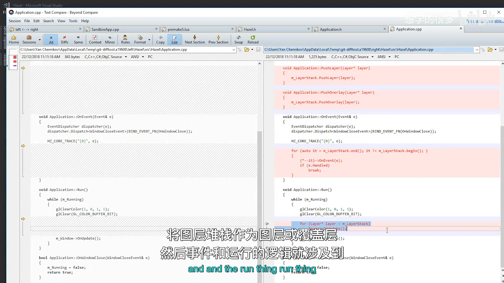
📷 Run 中正向遍历 LayerStack 并调用 OnUpdate
回到原视频 (00:15:30)
8. Event 反向遍历与停止传播
(参考时间: 00:15:47)
Application::OnEvent() 先处理应用级关闭事件，再从 LayerStack 末尾开始向前：
for (auto it = m_LayerStack.end();
it != m_LayerStack.begin();)
{
(*--it)->OnEvent(e);
if (e.Handled)
break;
}
循环没有在每次迭代后自动递减，而是先用 --it 指向前一个有效元素。这样可以安全地从 end() 反向访问。
事件传播规则：
- Overlay 最先收到事件；
- 随后是普通 UI、调试层和游戏层；
- 任意 Layer 把事件标记为
Handled； - 循环立即
break，更低层不再收到该事件。
sequenceDiagram
participant OS as 窗口 / 输入
participant APP as Application
participant O as Overlay
participant UI as UI Layer
participant G as Game Layer
OS->>APP: Event
APP->>O: OnEvent
O-->>O: EventDispatcher 处理事件
alt Overlay 返回 true
O-->>APP: Handled = true
APP--xG: 停止传播
else Overlay 未处理
APP->>UI: OnEvent
UI->>G: 必要时继续传播
end
视频中的典型例子是第一人称射击游戏：如果点击事件被屏幕按钮处理，就不应继续到游戏层并触发开枪。
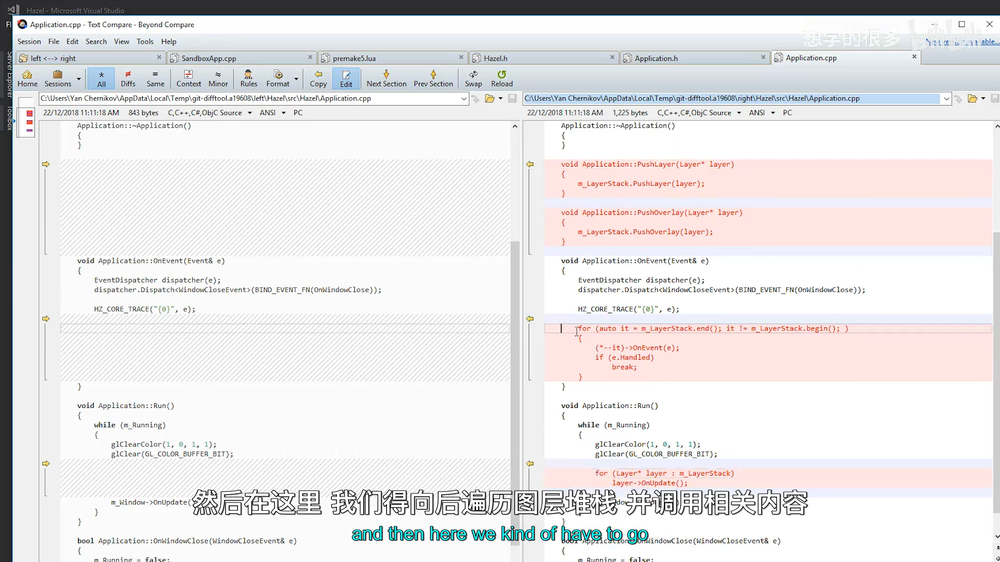
📷 OnEvent 从 LayerStack 末尾反向传播并在 Handled 时停止
回到原视频 (00:15:47)
9. 客户端公开头文件
(参考时间: 00:16:08)
Hazel.h 增加 Layer.h：
#include "Hazel/Application.h"
#include "Hazel/Layer.h"
#include "Hazel/Log.h"
Application.h 已经间接包含 LayerStack，但 Layer 是客户端最常使用的类型之一，因此在公开头文件中显式包含，使用更直观。
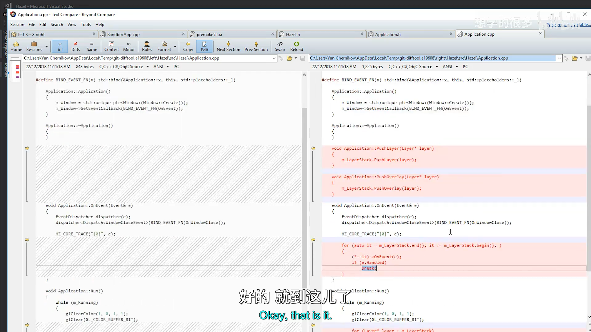
📷 Hazel.h 向客户端公开 Layer 类型
回到原视频 (00:16:08)
10. 修复 DLL 与 Sandbox 的运行时堆问题
(参考时间: 00:16:28)
构建 DLL 时，如果 Hazel 和 Sandbox 分别静态链接 C++ 运行时库，二者会拥有不同的堆。跨 DLL 边界释放对方分配的内存时，可能访问错误堆并崩溃。
视频中，这个问题在 spdlog 释放内存时暴露出来。修复方式是让两个项目都使用多线程 DLL 版本的运行时库：
- Debug 使用
MDd； - Release 使用
MD。
Premake 中增加对应配置。这样 Hazel DLL 与 Sandbox 共享兼容的运行时运行时环境，不再跨堆释放内存。
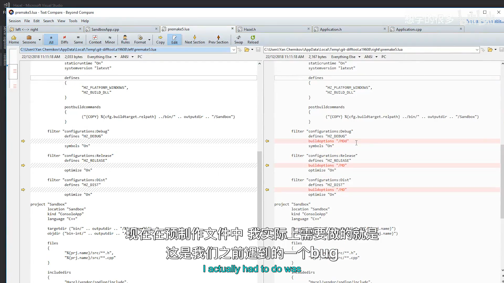
📷 Premake 改为使用 DLL 版本的 C++ 运行时库
回到原视频 (00:16:28)
11. 创建 ExampleLayer
(参考时间: 00:18:39)
客户端只需要继承 Hazel::Layer：
class ExampleLayer : public Hazel::Layer
{
public:
ExampleLayer()
: Layer("Example")
{
}
void OnUpdate() override
{
HZ_INFO("ExampleLayer::Update");
}
void OnEvent(Hazel::Event& event) override
{
HZ_TRACE("{0}", event);
}
};
Sandbox 构造函数把 ExampleLayer 推入应用：
class Sandbox : public Hazel::Application
{
public:
Sandbox()
{
PushLayer(new ExampleLayer());
}
};
如果要让它永远显示在普通层上方，也可以使用 PushOverlay(new ExampleLayer())。
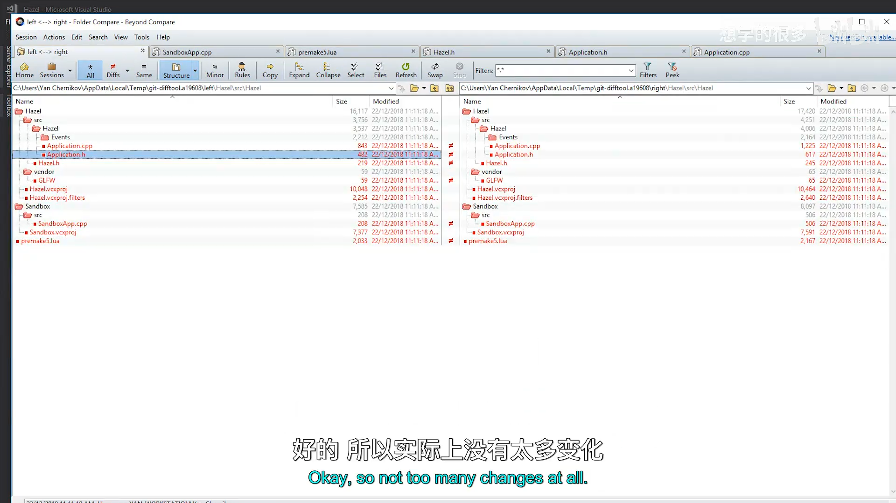
📷 客户端继承 Layer 并实现 Update 与 Event
回到原视频 (00:18:46)
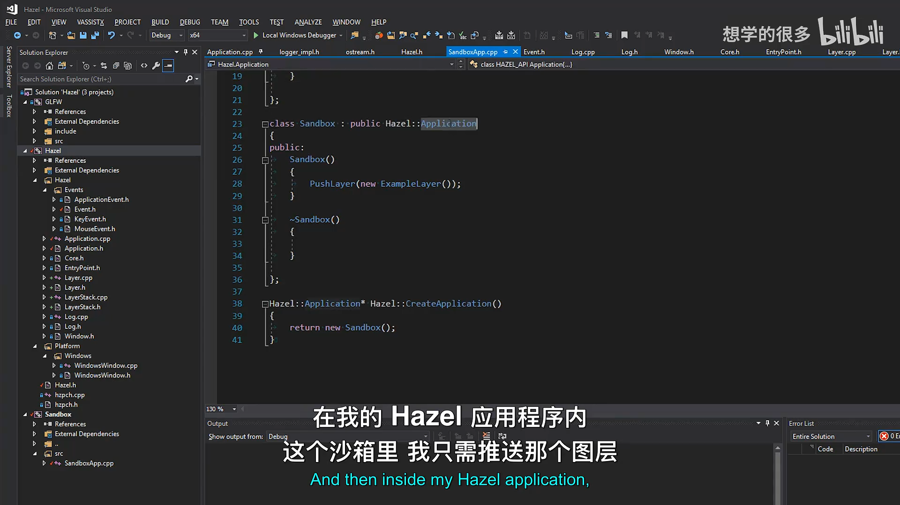
📷 Sandbox 通过 PushLayer 把 ExampleLayer 加入应用
回到原视频 (00:19:18)
12. 运行结果
(参考时间: 00:20:01)
运行后可以看到：
- Example Layer 每帧输出
ExampleLayer::Update； - 移动鼠标、按键或操作窗口时，Example Layer 收到事件；
- Hazel 核心日志先记录事件，Example Layer 随后记录事件；
- 如果移除
Application::OnEvent中的核心 Trace，则只保留层自身的事件日志； - 关闭按钮仍由应用级
WindowCloseEvent处理并结束主循环。
这展示了 Layer 已经成为游戏逻辑与事件处理的实际接收点，而 Application 负责统一调度和生命周期。
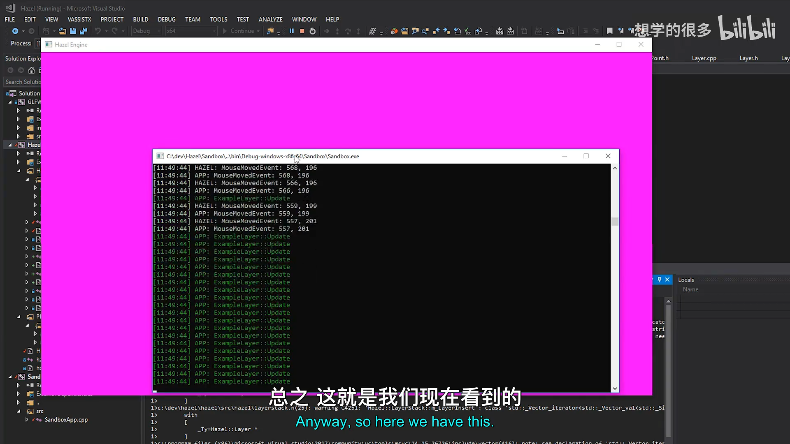
📷 Example Layer 持续更新并接收窗口事件
回到原视频 (00:20:01)
13. 后续方向
(参考时间: 00:20:35)
下一步计划是为 Hazel 接入 ImGui，并创建 ImGuiLayer：
- 接收 ImGui 需要的事件；
- 负责 ImGui 的渲染；
- 使用 Overlay 身份保持在普通层上方。
再往后，3D 世界和 2D UI 也会分别拥有自己的 Layer。届时 LayerStack 将成为 Hazel 运行时的基本组织单位：
Application
-> 管理主循环、窗口和 LayerStack
Layer
-> 更新、渲染和接收事件
LayerStack
-> 确定更新顺序、渲染顺序和事件传播顺序
14. 本节结论
本讲建立了 Hazel 的 Layer 系统：
Layer是客户端可继承的应用模块；LayerStack用vector管理层和 Overlay；- 普通层始终插在 Overlay 之前；
- Update 从底到顶执行；
- Event 从顶到底传播并在
Handled后停止； - LayerStack 拥有 Layer 的最终生命周期；
Application提供 PushLayer、PushOverlay 并驱动更新与事件；- 客户端可以通过
ExampleLayer扩展引擎行为。
Layer 和 LayerStack 看似代码很少，却是后续编辑器、UI、渲染器和工具系统的基础。引擎主循环负责稳定的运行时骨架，具体功能则以 Layer 的形式插入其中。